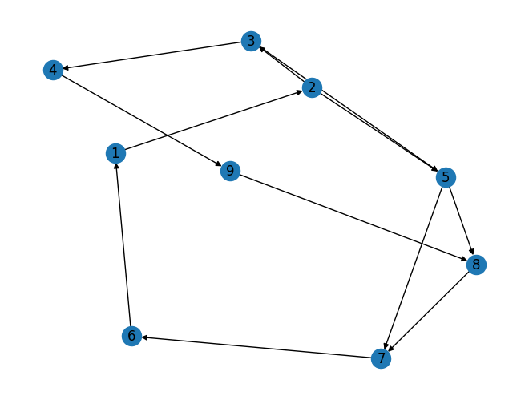

Tugas Pagerank dan ringkasan text#
Pagerank adalah algoritma yang digunakan dalam analisis jaringan dan pengurutan halaman web. Algoritma Pagerank mengukur kepentingan relatif dari setiap halaman web dalam suatu jaringan dengan menganalisis jumlah dan kualitas tautan masuk ke halaman tersebut dari halaman web lain dalam jaringan.
Tugas
Buat graph berarah dengan networkx(minimal 9 node) Langkahnya sebagai berikut :
Import library networkx Buat struktur grafik kosong. Digraph untuk graph berarah dan Graph untuk graph tidak berarah Mendeklarasikan node yang saling terhubung sesuai yang dibuat menampilkan graph beserta nama nodenya masing-masin
import networkx as ne
d = ne.DiGraph()
d.add_edges_from([(1,2),(2,3),(3,4),(4,9),(9,8),(8,7),(7,6),(6,1),(2,5),(3,5),(5,7),(5,8)])
ne.draw(d,with_labels=True)

# Perhitungan menggunakan networkx
ne.pagerank(d)
{1: 0.14529529357644713,
2: 0.1401676892095394,
3: 0.076238634951147,
4: 0.0490685200577753,
9: 0.0583749908496336,
8: 0.11245770188329454,
7: 0.15842763902749055,
6: 0.15132904210241682,
5: 0.10864048834225562}
RingakasanText#
pip install PyPDF2
Looking in indexes: https://pypi.org/simple, https://us-python.pkg.dev/colab-wheels/public/simple/
Requirement already satisfied: PyPDF2 in /usr/local/lib/python3.10/dist-packages (3.0.1)
pip install docx2txt
Looking in indexes: https://pypi.org/simple, https://us-python.pkg.dev/colab-wheels/public/simple/
Requirement already satisfied: docx2txt in /usr/local/lib/python3.10/dist-packages (0.8)
# Library numpy membantu bekerja dengan array: pembuatan dan manipulasi array
# Implementasi ini menggunakan array untuk menyimpan matriks yang dihasilkan sebagai array 2-D
# PyPDF2 adalah library yang digunakan untuk membaca file PDF
# docx2txt adalah library yang digunakan untuk membaca dokumen Word
# sys library digunakan untuk mencetak ukuran struktur data yang digunakan dalam program
import numpy as np
import PyPDF2
import docx2txt
import sys
# perpustakaan networkx membantu dalam bekerja dengan grafik ...
# dan kemudian melakukan algoritma PageRank ...
import networkx as nx
# matplotlib adalah library yang digunakan untuk memvisualisasikan data dengan menggambar grafik input matriks
# %matplotlib inline adalah perintah yang digunakan untuk menampilkan grafik di notebook jupyter
import matplotlib.pyplot as plt
%matplotlib inline
# PunktSentenceTokenizer digunakan untuk melakukan tokenisasi kalimat
from nltk.tokenize.punkt import PunktSentenceTokenizer
# TfidfTransformer, CountVectorizer digunakan untuk menentukan TF-IDF
from sklearn.feature_extraction.text import TfidfTransformer, CountVectorizer
#membaca dokumen dari user
def readDoc():
name = input('Please input a file name: ')
print('You have asked for the document {}'.format(name))
# now read the type of document
if name.lower().endswith('.txt'):
choice = 1
elif name.lower().endswith('.pdf'):
choice = 2
else:
choice = 3
# print(name)
print(choice)
# Case 1: if it is a .txt file
if choice == 1:
f = open(name, 'r')
document = f.read()
f.close()
# Case 2: if it is a .pdf file
elif choice == 2:
pdfFileObj = open(name, 'rb')
pdfReader = PyPDF2.PdfFileReader(pdfFileObj)
pageObj = pdfReader.getPage(0)
document = pageObj.extractText()
pdfFileObj.close()
# Case 3: none of the format
else:
print('Failed to load a valid file')
print('Returning an empty string')
document = ''
print(type(document))
return document
#membuat token pada dokumen
def tokenize(document):
# We are tokenizing using the PunktSentenceTokenizer
# we call an instance of this class as sentence_tokenizer
doc_tokenizer = PunktSentenceTokenizer()
# tokenize() method: takes our document as input and returns a list of all the sentences in the document
# sentences is a list containing each sentence of the document as an element
sentences_list = doc_tokenizer.tokenize(document)
return sentences_list
#membaca dokumen
# reading a file and
# printing the size of the file
document = readDoc()
print('The length of the file is:', end=' ')
print(len(document))
StdinNotImplementedErrorTraceback (most recent call last)
<ipython-input-10-45796550f6cb> in <cell line: 4>()
2 # reading a file and
3 # printing the size of the file
----> 4 document = readDoc()
5 print('The length of the file is:', end=' ')
6 print(len(document))
<ipython-input-8-c664ae925db6> in readDoc()
1 #membaca dokumen dari user
2 def readDoc():
----> 3 name = input('Please input a file name: ')
4 print('You have asked for the document {}'.format(name))
5
/usr/local/lib/python3.10/dist-packages/ipykernel/kernelbase.py in raw_input(self, prompt)
846 """
847 if not self._allow_stdin:
--> 848 raise StdinNotImplementedError(
849 "raw_input was called, but this frontend does not support input requests."
850 )
StdinNotImplementedError: raw_input was called, but this frontend does not support input requests.
sentences_list = tokenize(document)
# let us print the size of memory used by the list sentences
print('The size of the list in Bytes is: {}'.format(sys.getsizeof(sentences_list)))
# the size of one of the element of the list
print('The size of the item 0 in Bytes is: {}'.format(sys.getsizeof(sentences_list[0])))
The size of the list in Bytes is: 864
The size of the item 0 in Bytes is: 147
print(type(sentences_list))
<class 'list'>
print('The size of the list "sentences" is: {}'.format(len(sentences_list)))
The size of the list "sentences" is: 101
for i in sentences_list:
print(i)
In Banaras District there is a village called Bira in which an old, childless
widow used to live.
She was a Gond woman named Bhungi and she didn't
own either a scrap of land or a house to live in.
Her only source of livelihood
was a parching oven.
The village folk customarily have one meal a day of
parched grains, so there was always a crowd around Bhungi's oven.
Whatever grain she was paid for parching she would grind or fry and eat it.
She slept in a corner of the same little shack that sheltered the oven.
As soon
as it was light she'd get up and go out to gather dry leaves from all around to
make her fire.
She would stack the leaves right next to the oven, and after
twelve, light the fire.
But on the days when she had to parch grain for Pandit
Udaybhan Pandey, the owner of the village, she went to bed hungry.
She
was obliged to work without pay for Pandit Udaybhan Pandey She also had
to fetch water for his house.
And, for this reason, from time to time the oven
was not lit.
She lived in the Pandit's village, therefore he had full authority to
make her do any sort of odd job.
In his opinion if she received food for
working from him, how could it be considered as work done without pay?
He was doing her a favour, in fact, by letting her live in the village at all.
It was spring, a day on which the fresh grain was fried and eaten and given
as a gift.
No fire was lit in the houses Bhungi's oven was being put to good
use today.
There was a crowd worthy of a village fair around her.
She had
scarcely opportunity to draw a breath.
Because of the customer's impatience,
squabbles kept breaking out.
Then two servants arrived, each carrying a
heaped basket of grain from Pandit Udaybhan with the order to parch it right
away.
When Bhungi saw the two baskets she was alarmed.
It was already
after twelve and even by sunset, she would not have time to parch so much
grain.
Now she would have to stay at the oven parching until after dark for
no payment.
In despair she took the two baskets.
One of the flunkeys said
menacingly, 'Don't waste any time or you'll be sorry.'
With this command the servants went away and Bhungi began to parch the
grain.
It's no laughing matter to parch a whole maund of grain.
She had to
keep stopping from the parching in order to keep the oven fire going.
So by
sundown not even half the work was done.
She was afraid Panditji's men
would be coming.
She began to move her hands all the more frantically.
Soon the servants returned and said, 'Well, is the grain parched?'
Feeling bold, Bhungi said, 'Can't you see?
I'm parching it now.'
'The whole day's gone and you haven't finished any more grain than this!
Have you been roasting it or spoiling it?
This is completely uncooked!
How's it going to be used for food?
It's the ruin of us!
You’ll see what
Panditji does to you for this.'
The result was that that night the oven was dug up and Bhungi was left
without a means of livelihood.
Bhungi now had no means of support.
The villagers suffered a good deal
too from the destruction of the oven.
In many houses even at noon, cooked
cereal was no longer available.
People went to Panditji and asked him to
give the order for the old woman's oven to be rebuilt and the fire once more
lighted, but he paid no attention to them.
He could not suffer a loss of face.
A few people who wished her well urged her to move to another village.
But
her heart would not accept this suggestion.
She had spent her fifty miserable
years in this village and she loved every leaf on every tree.
Here she had
known the sorrows and pleasures of life; she could not give it up now in the
last days.
The very idea of moving distressed her.
Sorrow in this village was
preferable to happiness in another.
A month went by.
Very early one morning Pandit Udaybhan, taking his
little band of servants with him, went out to collect his rents.
Now when he
looked toward the old woman's oven he fell into a violent rage: it was being
made again.
Bhungi was energetically rebuilding it with balls of clay Most
likely she'd spent the night at this work and wanted to finish it before the sun
was high.
She knew that she was going against the Pandit's wishes, but she
hoped that he had forgotten his anger by then.
But alas, the poor creature had
gown old without growing wise.
Suddenly Panditji shouted, 'By whose order?'
Bewildered, Bhungi saw that he was standing before her.
He demanded once again, 'By whose order are you building it?'
In a flight
she said, 'Everybody said I should build it and so I'm building it.'
'I'll have it smashed again.
'With this he kicked the oven.
The wet clay
collapsed in a heap.
He kicked at the trough again but she ran in front of it
and took the kick in her side.
Rubbing her ribs she said, 'Maharaj, you're not
afraid of anybody but you ought to fear God.
What good does it do you to
ruin me like this!
Do you think gold is going to grow out of this small piece
of land!
For your own good, I'm telling you, don't torment poor people, don't
be the death of me.
'You're not going to build any oven here again.
'If I don't how am I going to be able to eat!'
'I'm not responsible for your belly.'
'But if I do nothing except chores for you where will I go for food!'
'If you’re going to stay in the village you'll have to do my chores.
'I'll do them when I've built my over?.
I can't do your work just for the
sake of staying in the village.
'Then don't, just get out of the village.
'How can I!
I've grown old in this hut.
My in-laws and their grandparents
lived in this same hut.
Except for Yama, king of death, nobody's going to
force me out of it now.
'Excellent, now you're quoting Scripture!'
Pandit Udaybhan said.
'lf you'd
worked hard I might have let you stay, but after this I won't rest until I've
had you thrown out.
‘To his attendants he said, 'Go get a pile of leaves right
away and set fire to the whole thing; we'll show her how to make an oven.
In a moment there was a tremendous racket.
The names leapt towards the
sky, the blaze spread wildly in all directions till the villagers came clustering
around this mountain of fire.
Hopelessly, Bhungi stood by her oven
watching the conflagration.
Suddenly, with a violent dash, she hurled herself
into the names.
They came running from everywhere but no one had the
courage to go into the mouth of the blaze.
In a matter of seconds her
withered body was completely consumed.
At that moment the wind rose with a gust.
The liberated flames began to
race toward the east.
There were some peasants' huts near the oven which
were engulfed by the fierce flames.
Fed in this way, the blaze spread even
further.
Panditji's barn was in its path and it pounced upon it.
By now the
whole village was in a panic.
They began to band together to put out the fire
but the sprinkle of water acted like oil on it and the flames kept mounting
higher.
Pandit Udaybhan's splendid mansion was swallowed up; while he
watched, it tossed like a ship amid wild waves and disappeared in the sea of
fire.
The sound of lamentation that broke out amidst the ashes was even
more pitiful than Bhungi's grievous cries.
menghasilkan term-dokumen matrix (TD mattrix) dari data#
cv = CountVectorizer()
cv_matrix = cv.fit_transform(sentences_list)
cv_demo = CountVectorizer()
text_demo = ["Ashish is good, you are bad", "I am not bad"]
res_demo = cv_demo.fit_transform(text_demo)
print('Result demo array is {}'.format(res_demo.toarray()))
# Result is 2-d matrix containing document text matrix
# Notice that in the second row, there is 2.
# also, bad is repeated twice in that sentence.
# so we can infer that 2 is corresponding to the word 'bad'
print('Feature list: {}'.format(cv_demo.get_feature_names_out()))
Result demo array is [[0 1 1 1 1 1 0 1]
[1 0 0 1 0 0 1 0]]
Feature list: ['am' 'are' 'ashish' 'bad' 'good' 'is' 'not' 'you']
print('The data type of bow matrix {}'.format(type(cv_matrix)))
print('Shape of the matrix {}'.format(cv_matrix.get_shape))
print('Size of the matrix is: {}'.format(sys.getsizeof(cv_matrix)))
print(cv.get_feature_names_out())
print(cv_matrix.toarray())
The data type of bow matrix <class 'scipy.sparse._csr.csr_matrix'>
Shape of the matrix <bound method spmatrix.get_shape of <101x492 sparse matrix of type '<class 'numpy.int64'>'
with 1223 stored elements in Compressed Sparse Row format>>
Size of the matrix is: 48
['able' 'accept' 'acted' 'afraid' 'after' 'again' 'against' 'alarmed'
'alas' 'all' 'already' 'also' 'always' 'am' 'amid' 'amidst' 'an' 'and'
'anger' 'another' 'any' 'anybody' 'are' 'around' 'arrived' 'as' 'ashes'
'asked' 'at' 'attendants' 'attention' 'authority' 'available' 'away'
'balls' 'banaras' 'band' 'barn' 'basket' 'baskets' 'be' 'because' 'bed'
'been' 'before' 'began' 'being' 'belly' 'bewildered' 'bhungi' 'bira'
'blaze' 'body' 'bold' 'breaking' 'breath' 'broke' 'build' 'building'
'built' 'but' 'by' 'called' 'came' 'can' 'carrying' 'cereal' 'childless'
'chores' 'clay' 'clustering' 'collapsed' 'collect' 'coming' 'command'
'completely' 'conflagration' 'considered' 'consumed' 'cooked' 'corner'
'could' 'courage' 'creature' 'cries' 'crowd' 'customarily' 'customer'
'dark' 'dash' 'day' 'days' 'deal' 'death' 'demanded' 'despair'
'destruction' 'didn' 'directions' 'disappeared' 'distressed' 'district'
'do' 'does' 'doing' 'don' 'done' 'draw' 'dry' 'dug' 'each' 'early' 'east'
'eat' 'eaten' 'either' 'energetically' 'engulfed' 'even' 'every'
'everybody' 'everywhere' 'excellent' 'except' 'face' 'fact' 'fair'
'favour' 'fear' 'fed' 'feeling' 'fell' 'fetch' 'few' 'fierce' 'fifty'
'finish' 'finished' 'fire' 'flames' 'flight' 'flunkeys' 'folk' 'food'
'for' 'force' 'forgotten' 'frantically' 'fresh' 'fried' 'from' 'front'
'fry' 'full' 'further' 'gather' 'get' 'gift' 'give' 'given' 'go' 'god'
'going' 'gold' 'gond' 'gone' 'good' 'gown' 'grain' 'grains'
'grandparents' 'grievous' 'grind' 'grow' 'growing' 'grown' 'gust' 'had'
'half' 'hands' 'happiness' 'hard' 'have' 'haven' 'he' 'heap' 'heaped'
'heart' 'her' 'here' 'herself' 'high' 'higher' 'him' 'his' 'hoped'
'hopelessly' 'house' 'houses' 'how' 'hungry' 'hurled' 'hut' 'huts' 'idea'
'if' 'impatience' 'in' 'into' 'is' 'it' 'its' 'job' 'just' 'keep' 'kept'
'kick' 'kicked' 'king' 'knew' 'known' 'lamentation' 'land' 'last'
'laughing' 'laws' 'leaf' 'leapt' 'leaves' 'left' 'let' 'letting' 'lf'
'liberated' 'life' 'light' 'lighted' 'like' 'likely' 'lit' 'little'
'live' 'lived' 'livelihood' 'll' 'longer' 'looked' 'loss' 'loved' 'made'
'maharaj' 'make' 'mansion' 'many' 'matter' 'maund' 'me' 'meal' 'means'
'men' 'menacingly' 'might' 'miserable' 'moment' 'month' 'more' 'morning'
'most' 'mountain' 'mounting' 'mouth' 'move' 'moving' 'much' 'my' 'named'
'names' 'near' 'next' 'night' 'no' 'nobody' 'noon' 'not' 'nothing' 'now'
'obliged' 'odd' 'of' 'oil' 'old' 'on' 'once' 'one' 'only' 'opinion'
'opportunity' 'or' 'order' 'ought' 'out' 'oven' 'over' 'own' 'owner'
'paid' 'pandey' 'pandit' 'panditji' 'panic' 'parch' 'parched' 'parching'
'path' 'pay' 'payment' 'peasants' 'people' 'piece' 'pile' 'pitiful'
'pleasures' 'poor' 'pounced' 'preferable' 'put' 'quoting' 'race' 'racket'
'rage' 'ran' 're' 'reason' 'rebuilding' 'rebuilt' 'received' 'rents'
'responsible' 'rest' 'result' 'returned' 'ribs' 'right' 'roasting' 'rose'
'rubbing' 'ruin' 'running' 'said' 'sake' 'same' 'saw' 'scarcely' 'scrap'
'scripture' 'sea' 'seconds' 'see' 'servants' 'set' 'shack' 'she'
'sheltered' 'ship' 'should' 'shouted' 'show' 'side' 'sky' 'slept' 'small'
'smashed' 'so' 'some' 'soon' 'sorrow' 'sorrows' 'sorry' 'sort' 'sound'
'source' 'spent' 'splendid' 'spoiling' 'spread' 'spring' 'sprinkle'
'squabbles' 'stack' 'standing' 'stay' 'staying' 'stood' 'stopping'
'suddenly' 'suffer' 'suffered' 'suggestion' 'sun' 'sundown' 'sunset'
'support' 'swallowed' 'taking' 'telling' 'than' 'that' 'the' 'their'
'them' 'then' 'there' 'therefore' 'they' 'thing' 'think' 'this' 'thrown'
'till' 'time' 'to' 'today' 'together' 'too' 'took' 'torment' 'tossed'
'toward' 'towards' 'tree' 'tremendous' 'trough' 'twelve' 'two' 'udaybhan'
'uncooked' 'until' 'up' 'upon' 'urged' 'us' 'use' 'used' 've' 'very'
'village' 'villagers' 'violent' 'wanted' 'was' 'waste' 'watched'
'watching' 'water' 'waves' 'way' 'we' 'well' 'went' 'were' 'wet' 'what'
'whatever' 'when' 'where' 'which' 'while' 'who' 'whole' 'whose' 'widow'
'wild' 'wildly' 'will' 'wind' 'wise' 'wished' 'wishes' 'with' 'withered'
'without' 'woman' 'won' 'work' 'worked' 'working' 'worthy' 'would' 'yama'
'years' 'you' 'your']
[[0 0 0 ... 0 0 0]
[0 0 0 ... 0 0 0]
[0 0 0 ... 0 0 0]
...
[0 0 1 ... 0 0 0]
[0 0 0 ... 0 0 0]
[0 0 0 ... 0 0 0]]
normal_matrix = TfidfTransformer().fit_transform(cv_matrix)
print(normal_matrix.toarray())
[[0. 0. 0. ... 0. 0. 0. ]
[0. 0. 0. ... 0. 0. 0. ]
[0. 0. 0. ... 0. 0. 0. ]
...
[0. 0. 0.24450772 ... 0. 0. 0. ]
[0. 0. 0. ... 0. 0. 0. ]
[0. 0. 0. ... 0. 0. 0. ]]
print(normal_matrix.T.toarray)
res_graph = normal_matrix * normal_matrix.T
<bound method _cs_matrix.toarray of <492x101 sparse matrix of type '<class 'numpy.float64'>'
with 1223 stored elements in Compressed Sparse Column format>>
nx_graph = nx.from_scipy_sparse_array(res_graph)
nx.draw_circular(nx_graph)
print('Number of edges {}'.format(nx_graph.number_of_edges()))
print('Number of vertices {}'.format(nx_graph.number_of_nodes()))
plt.show()
print('The memory used by the graph in Bytes is: {}'.format(sys.getsizeof(nx_graph)))
Number of edges 3319
Number of vertices 101
The memory used by the graph in Bytes is: 48
mendapatkan peringkat untuk setiap kalimat menggunakan textrank#
ranks = nx.pagerank(nx_graph)
# analyse the data type of ranks
print(type(ranks))
print('The size used by the dictionary in Bytes is: {}'.format(sys.getsizeof(ranks)))
# print the dictionary
for i in ranks:
print(i, ranks[i])
<class 'dict'>
The size used by the dictionary in Bytes is: 4696
0 0.008473050396994235
1 0.011136728928068603
2 0.009383758113199747
3 0.010305311473077004
4 0.011387878003998006
5 0.011453806553948459
6 0.011956616615231173
7 0.013007582297781907
8 0.01646287839865644
9 0.011870375394732305
10 0.012805637163062402
11 0.012625721662310345
12 0.010081809427917856
13 0.012615817098175835
14 0.009951004198363802
15 0.012312866898217463
16 0.00905563154351586
17 0.007114339155021146
18 0.0067471140170273294
19 0.01107854731351773
20 0.010166769608001893
21 0.012780859072392963
22 0.012641302785309182
23 0.009348558444248853
24 0.010022831759849004
25 0.013720926664709483
26 0.00967523353291061
27 0.013901992235429548
28 0.009475796944343159
29 0.008121737705990758
30 0.010128784557098498
31 0.010061180193377258
32 0.007628895359126891
33 0.008648669935446914
34 0.009607446148227936
35 0.008321167851894651
36 0.005865449854506728
37 0.010850655936218322
38 0.01016989679015465
39 0.011316273575827006
40 0.012806608183832108
41 0.008721584132312048
42 0.010471498183578098
43 0.0069310162410310865
44 0.015471208931766298
45 0.006769574754561524
46 0.00847046871802134
47 0.007920488123990665
48 0.009307304242218498
49 0.013422349587962496
50 0.00800377307176715
51 0.010972977593541676
52 0.005638736527026145
53 0.008382997267176076
54 0.010529607891291103
55 0.01388066751249088
56 0.012126702206111421
57 0.006784615529807721
58 0.006089601429223819
59 0.008586642640796938
60 0.008907144628014934
61 0.010300210131439285
62 0.007498144929122573
63 0.011431342109109786
64 0.0070336084718421255
65 0.014620307759349064
66 0.010952275488776595
67 0.010544285648427243
68 0.010429795820400786
69 0.0095418617321447
70 0.010525969363956913
71 0.008928640660743125
72 0.006048548423719141
73 0.00797891836019073
74 0.014936237724528284
75 0.0057851131761969855
76 0.01283079486351997
77 0.009853549019121232
78 0.005429708840559132
79 0.00761018082820169
80 0.008306177787750085
81 0.01057520034676566
82 0.006302922702336774
83 0.006533326937930438
84 0.008770716307206536
85 0.013144181304936983
86 0.007410276777927928
87 0.010919714810479554
88 0.009071467904553753
89 0.007324323114289139
90 0.011678174623675307
91 0.008559039093945649
92 0.007144824222961522
93 0.008754682443611118
94 0.007575234843209658
95 0.008323733804457837
96 0.009463817503427964
97 0.013055845277031975
98 0.012555442089009524
99 0.01007944190625105
100 0.009695491842487962
#menemukan kalaimat penting dan membuat ringkasan
sentence_array = sorted(((ranks[i], s) for i, s in enumerate(sentences_list)), reverse=True)
sentence_array = np.asarray(sentence_array)
rank_max = float(sentence_array[0][0])
rank_min = float(sentence_array[len(sentence_array) - 1][0])
print(rank_max)
print(rank_min)
0.01646287839865644
0.005429708840559132
temp_array = []
# if all sentences have equal ranks, means they are all the same
# taking any sentence will give the summary, say the first sentence
flag = 0
if rank_max - rank_min == 0:
temp_array.append(0)
flag = 1
# If the sentence has different ranks
if flag != 1:
for i in range(0, len(sentence_array)):
temp_array.append((float(sentence_array[i][0]) - rank_min) / (rank_max - rank_min))
print(len(temp_array))
101
threshold = (sum(temp_array) / len(temp_array)) + 0.2
sentence_list = []
if len(temp_array) > 1:
for i in range(0, len(temp_array)):
if temp_array[i] > threshold:
sentence_list.append(sentence_array[i][1])
else:
sentence_list.append(sentence_array[0][1])
model = sentence_list